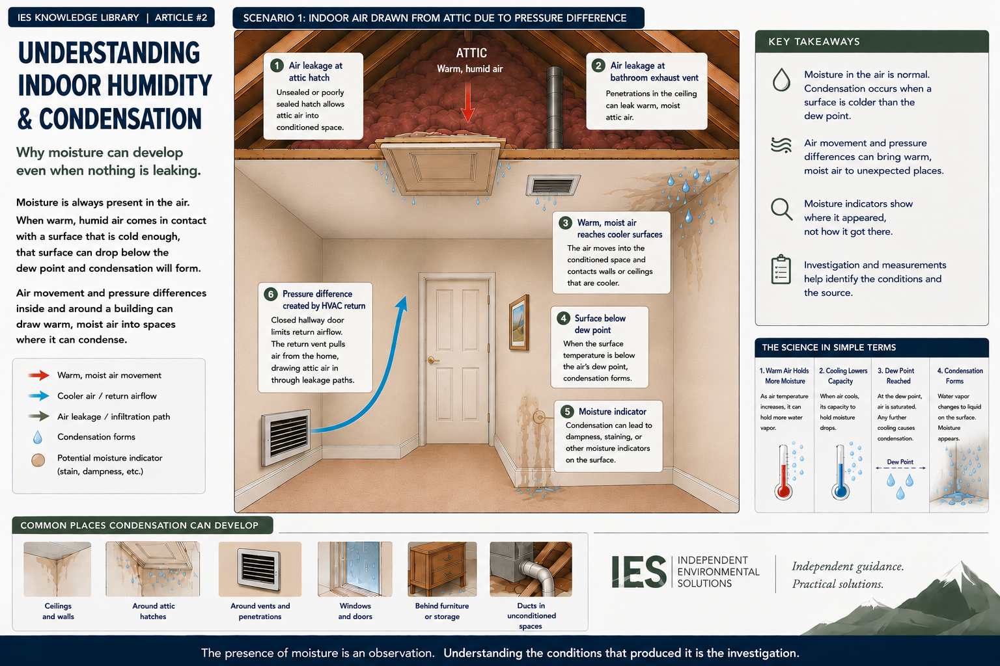

Condensation may appear as droplets on a window, dampness around a vent, staining on a ceiling, or elevated moisture in building materials. Those conditions can resemble a leak but water does not always have to enter a building as liquid for a moisture problem to develop.
01 · Humidity
Humidity Describes Moisture in the Air
Air contains water vapor, even when the air feels dry. Relative humidity describes the amount of water vapor present in the air relative to the amount the air can hold at its current temperature.
Temperature matters. Warmer air can contain more water vapor than cooler air. As air cools, its capacity to hold moisture decreases. The same amount of water vapor can therefore produce very different relative-humidity readings at different temperatures.
Humidity tells us something about the air. Temperature helps tell us what that moisture may do.
02 · Dew Point
When Water Vapor Becomes Liquid Water
As moist air cools, it eventually reaches a temperature at which it can no longer keep all of its moisture in vapor form. That temperature is the dew point.
If a surface is colder than the dew point of the surrounding air, water vapor can condense on that surface.
A familiar example is a cold drink on a humid day. The water appearing on the outside of the glass did not leak through the glass. Moisture from the surrounding air condensed against the cold surface. The same principle can occur inside a building.
The presence of liquid water does not necessarily mean liquid water entered the building.
Sometimes the water was already there as vapor in the air.
03 · Surface Temperature
Buildings Create Different Temperatures
The air temperature displayed on a thermostat is only one temperature inside a building. Individual surfaces may be considerably warmer or cooler.
Exterior Assemblies
Exterior walls, windows, and other components may be strongly influenced by outdoor temperature.
HVAC Components
Supply registers, ductwork, and air-conditioning equipment may cool nearby materials or surfaces.
Insulation Conditions
Missing, compressed, or displaced insulation can create localized cool areas that behave differently from surrounding surfaces.
Restricted Airflow
Furniture or other objects placed tightly against a wall may reduce air circulation and allow the surface behind them to remain cooler.
Room temperature is useful information and surface temperature helps answer a different question.
04 · Air Movement
Air Movement Changes the Picture
Temperature and humidity explain when condensation can occur. Air movement can help explain why moisture reached that location in the first place.
Buildings are not perfectly sealed. Air moves through doorways, wall cavities, ceiling penetrations, attic doors, utility openings, exhaust fans, duct systems, and countless small gaps in the building enclosure.
Some movement occurs naturally. Some movements are created by mechanical systems. And sometimes a seemingly minor change such as closing a door can alter the pressure relationship between different parts of a building.
Condensation depends not only on humidity and temperature, but also on how air moves through the building.
When the Attic Becomes the Air Source
Consider a hallway with an HVAC return, a closed hallway door, and an attic hatch. If the HVAC return cannot make up air through its normal pathway, the hallway around the return may become negatively pressurized.
Air still has to made up from somewhere. If openings around the attic hatch are not air-sealed, warm, humid attic air may be drawn downward into the conditioned space.
That warm, moist air can then encounter surfaces considerably cooler and if the surfaces are below the dew point of the incoming air, condensation may develop on nearby surfaces.
At first glance, the pattern could resemble a leak. But the mechanism may be entirely different.

Outdoor Air Can Create the Same Problem
The attic is only one possible source of warm, moist air. Outdoor air can enter through gaps around doors and windows, deteriorated weather stripping, penetrations through exterior walls, or other weaknesses in the building enclosure.
During warm, humid weather, that outdoor air may encounter cooler surfaces. Again, the conditions are present: moisture + temperature difference + air movement.
Understanding where the air came from can be just as important as knowing where the moisture appeared.
05 · Measurement
What Measurements Can Tell Us
A moisture investigation may involve several types of measurements because no single measurement explains every part of the condition.
Relative Humidity
Helps characterize moisture conditions in the air at a particular temperature.
Air Temperature
Provides context for relative humidity and helps characterize differences between spaces.
Surface Temperature
Helps determine whether a particular surface may be approaching or falling below the dew point.
Dew Point
Helps connect air conditions to the temperature at which condensation may occur.
Material Moisture
May help identify differences between building materials, define the apparent extent of a condition, and compare affected and unaffected areas.
A number by itself doesn't tell the whole story.
The usefulness comes from understanding how the measurements relate to one another and to the building.
06 · Patterns
Patterns Matter
A single damp location tells us that moisture is present. A pattern might tell us more.
Those comparisons can help narrow the possible explanations. The investigation becomes a process of:
The visible condition tells us where to begin. The pattern helps tell us where to look next.
07 · Microbial Conditions
Condensation and Microbial Growth
Condensation does not automatically mean microbial growth is present. However, when building materials remain damp for long periods, moisture can create conditions that support microbial growth.
Porous materials such as drywall, paper facings, insulation, ceiling materials, and some furnishings may be particularly sensitive to prolonged moisture.
The useful question is not simply whether condensation occurred once but whether the condition is persistent, recurring, or sufficient to affect the materials involved.
Correcting recurring condensation may require addressing the condition that allows it to develop and not simply drying the visible moisture.
08 · Evidence
A Moisture Stain Is Evidence, Not an Explanation
One of the easiest mistakes in a moisture investigation is making conclusions based on the visible issue.
The observation itself does not establish the cause.
Condensation, air leaks, pressure differences, previous moisture problems, plumbing sources, or combinations of conditions may also need to be considered.
The presence of moisture is an observation. Understanding the conditions that produced it is the investigation.
09 · Limits
What Can We Say With Confidence?
Not every investigation produces a single definitive source. Sometimes several contributing conditions are present. And sometimes additional observation, testing, or evaluation is needed before the source can be determined.
That uncertainty is not a failure of the investigation. It is part of describing the evidence accurately.
A good investigation doesn't force certainty that the evidence doesn't provide.
The findings should say only what the evidence supports.
10 · Perspective
Understanding Before Acting
Indoor humidity and condensation are good examples of why buildings are best understood as systems.
Looking at any one of those factors in isolation may provide useful information. Understanding how they interact provides valuable context.
That context can help determine whether the next step is drying a material, improving air sealing, evaluating HVAC operation, correcting an insulation condition, investigating another source, monitoring conditions over time, or pursuing additional evaluation.
The goal isn't simply to make the moisture disappear. It is to understand enough about why it developed to correct the issue.
Good decisions begin with good observations.